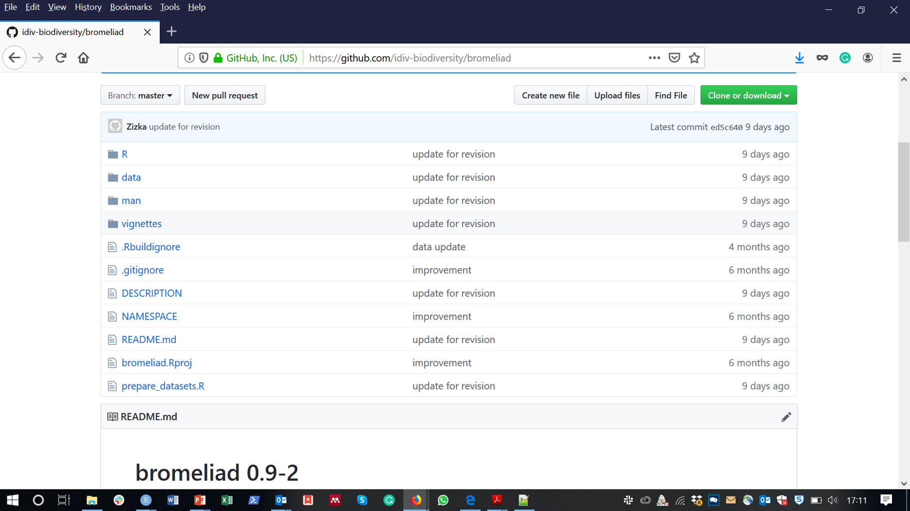
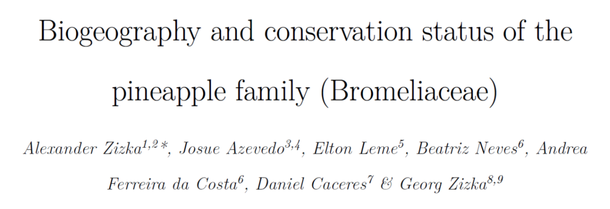
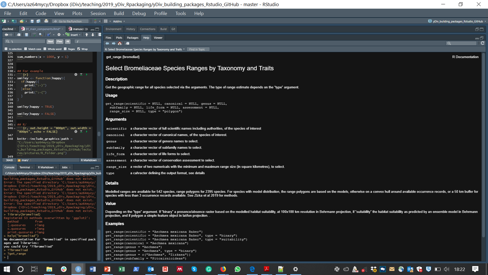
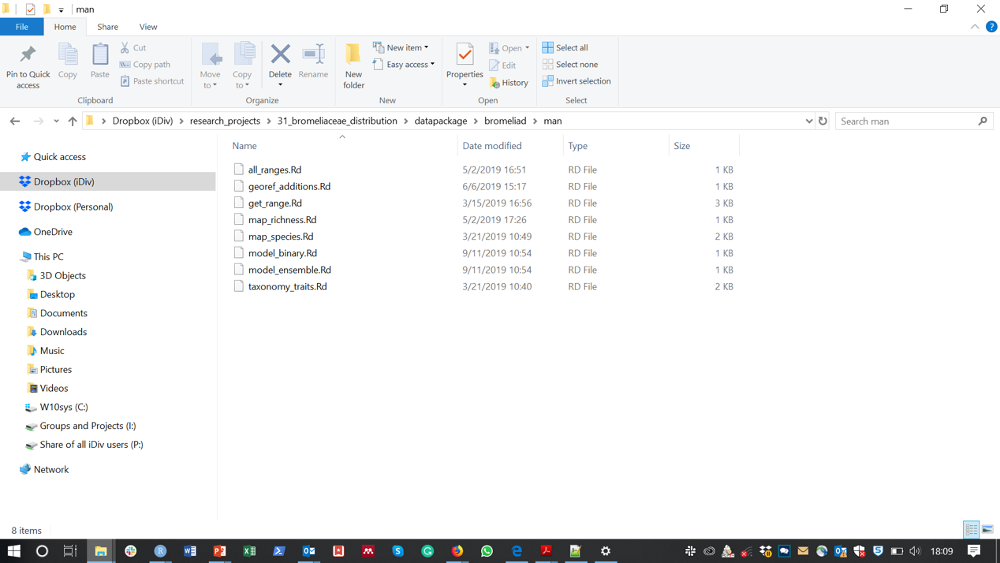

Easy to use
Easy to get help
A lot of work has been done already
~19700 packges on CRAN!


# A tibble: 3,272 × 12
tax_accepted_name tax_genus tax_tribus tax_subfamily geo_range conv_conr_eoo
<chr> <chr> <chr> <chr> <dbl> <dbl>
1 Acanthostachys pi… Acanthos… <NA> Bromelioideae 7695 NA
2 Acanthostachys st… Acanthos… <NA> Bromelioideae 613125 842084
3 Aechmea abbreviat… Aechmea <NA> Bromelioideae 15625 20504
4 Aechmea aculeatos… Aechmea <NA> Bromelioideae 11499 11499
5 Aechmea aenigmati… Aechmea <NA> Bromelioideae 7436 NA
6 Aechmea aguadocen… Aechmea <NA> Bromelioideae 7701 NA
7 Aechmea aiuruocen… Aechmea <NA> Bromelioideae 7705 NA
8 Aechmea alba Mez Aechmea <NA> Bromelioideae 89375 80897
9 Aechmea alegrensi… Aechmea <NA> Bromelioideae 7703 NA
10 Aechmea alopecuru… Aechmea <NA> Bromelioideae 27649 27650
# ℹ 3,262 more rows
# ℹ 6 more variables: conv_conr_aoo <dbl>, conv_conr_pop <dbl>,
# conv_conr_code <chr>, conv_conr_stat <chr>, tr_growth_form <chr>,
# tax_canonical <chr>Simple feature collection with 3272 features and 1 field
Geometry type: GEOMETRY
Dimension: XY
Bounding box: xmin: -112.8833 ymin: -44.00848 xmax: -34.63333 ymax: 36.38029
Geodetic CRS: WGS 84
First 10 features:
tax_accepted_name
1 Acanthostachys pitcairnioides (Mez) Rauh & Barthlott
2 Acanthostachys strobilacea (Schult. & Schult.f.) Klotsch
3 Aechmea abbreviata L.B.Sm.
4 Aechmea aculeatosepala (Rauh & Barthlott) Leme
5 Aechmea aenigmatica Lopez-Ferrari, Espejo, Ceja et A.Mendoza
6 Aechmea aguadocensis Leme & L.Kollmann
7 Aechmea aiuruocensis Leme
8 Aechmea alba Mez
9 Aechmea alegrensis W.Weber
10 Aechmea alopecurus Mez
geometry
1 POLYGON ((-41.478 -12.1831,...
2 MULTIPOLYGON (((-54.38333 -...
3 MULTIPOLYGON (((-75.88333 -...
4 POLYGON ((-78.1828 -3.26, -...
5 POLYGON ((-96.4525 16.1917,...
6 POLYGON ((-40.4689 -18.5706...
7 POLYGON ((-44.1391 -22.0335...
8 MULTIPOLYGON (((-40.13333 -...
9 POLYGON ((-41 -20.7089, -41...
10 POLYGON ((-43.6783 -22.5497...A folder…
…with standardized structure and names
DESCRIPTION
README.md
NAMSPACE
R/
man/
data/
inst/, vignettes/, tests/ .Rbuildignore, .gitignore, cran-comments.md, NEWS.md
A text file giving basic and standardized information on the package
Package: bromeliad
Title: Distribution Data for 3272 Bromeliad Species
Version: 0.9-2
Authors@R: person("Alexander", "zizka",
email = "zizka.alexander@gmail.com",
role = c("aut", "cre"))
Description: Contains range estimates and modelled distributions for
3272 species of the ananas family (Bromeliaceae),
together with some convenience functoins to extract
specific taxa and life forms and visualize diversity.
Depends: R (>= 3.5.0)
Imports: dplyr, ggplot2, ggthemes, magrittr, methods,
raster, rnaturalearth,
speciesgeocodeR, rlang, sf, sp, viridis
License: GPL-3
Encoding: UTF-8
RoxygenNote: 6.1.1A description of the package for Github
# bromeliad 0.9-2
A data package with distribution data for 2272 bromeliaceae species across tropical America.
## Included data
The package includes five data files:
1. `taxonomy traits` - a data.frame with taxonomy, traits and conservation assessment for the included species.
2. `all_ranges` - a simple features object containing range polygons for all 2395 species.
3. `model_binary` - a list of presence/absence rasters, for 541 species for which the ranges were estimated based on climate suitability models
4. `model_ensemble` - a list of rasters with habitat suitability, for 541 species for which the ranges were estimated based on climate suitability models
5. `digitized_records` - a data.frame with the point locations of XXX species type specimens, georeferenced from the literature for this package
## Installation
The package can be installed from github using `devtools::install_github`
library(devtools)
install_github("idiv-biodiversity/bromeliad")
library(bromeliad)
## Documentation
The package also includes some convinieince functions to select taxa and visualize species ranges and diversity. A vignette describing how to select individual taxa and visualize species distributions and diversity patterns is available [here]().
## Contribute
If you want to contribute with new species or corrections, please contact the [maintainer](mailto:alexander.zizka@idiv.de) of the package.
## Licence
The package and data are available under a GPL-3 license.
## Citation
Please cite the package as Zizka A *et al.* (2019) bromeliad. An R package for biogeography and conservations tatus of Bromeliaceae.
A file with the names of all functions that your package uses and provides.
export(get_range)
export(map_richness)
export(map_species)
importFrom(dplyr,filter)
importFrom(dplyr,mutate)
importFrom(ggplot2,aes)
importFrom(ggplot2,annotate)
importFrom(ggplot2,coord_fixed)
importFrom(ggplot2,element_line)
importFrom(ggplot2,fortify)
importFrom(ggplot2,geom_polygon)
importFrom(ggplot2,geom_sf)
importFrom(ggplot2,geom_tile)
importFrom(ggplot2,ggplot)
importFrom(ggplot2,ggtitle)
importFrom(ggplot2,theme)
importFrom(ggplot2,xlim)
importFrom(ggplot2,ylim)
importFrom(ggthemes,theme_map)
importFrom(magrittr,"%>%")
importFrom(methods,as)
importFrom(raster,crop)
importFrom(raster,extend)
importFrom(raster,extent)
importFrom(raster,raster)
importFrom(raster,rasterToPoints)
importFrom(rlang,.data)
importFrom(rnaturalearth,ne_download)
importFrom(sf,st_transform)
importFrom(sp,CRS)
importFrom(sp,spTransform)
importFrom(speciesgeocodeR,RangeRichness)
importFrom(utils,data)
importFrom(viridis,scale_fill_viridis)The datasets distributed with the package. Can be example data or the purpose of the package.
Can be any object that can be loaded into R such as tables, shape files, …
# A tibble: 3,272 × 12
tax_accepted_name tax_genus tax_tribus tax_subfamily geo_range conv_conr_eoo
<chr> <chr> <chr> <chr> <dbl> <dbl>
1 Acanthostachys pi… Acanthos… <NA> Bromelioideae 7695 NA
2 Acanthostachys st… Acanthos… <NA> Bromelioideae 613125 842084
3 Aechmea abbreviat… Aechmea <NA> Bromelioideae 15625 20504
4 Aechmea aculeatos… Aechmea <NA> Bromelioideae 11499 11499
5 Aechmea aenigmati… Aechmea <NA> Bromelioideae 7436 NA
6 Aechmea aguadocen… Aechmea <NA> Bromelioideae 7701 NA
7 Aechmea aiuruocen… Aechmea <NA> Bromelioideae 7705 NA
8 Aechmea alba Mez Aechmea <NA> Bromelioideae 89375 80897
9 Aechmea alegrensi… Aechmea <NA> Bromelioideae 7703 NA
10 Aechmea alopecuru… Aechmea <NA> Bromelioideae 27649 27650
# ℹ 3,262 more rows
# ℹ 6 more variables: conv_conr_aoo <dbl>, conv_conr_pop <dbl>,
# conv_conr_code <chr>, conv_conr_stat <chr>, tr_growth_form <chr>,
# tax_canonical <chr>The code (functions) provided via your package.
In packages code is distributed as functions. Functions are objects just as variables.
get_range <- function(scientific = NULL, canonical = NULL, genus = NULL,
subfamily = NULL, life_form = NULL, assessment = NULL,
range_size = NULL, type = "polygon"){
match.arg(type, choices = c("binary", "suitability", "polygon"))
taxonomy_traits <- bromeliad::taxonomy_traits
if(!is.null(scientific)){
taxonomy_traits <- dplyr::filter(taxonomy_traits,
.data$tax_accepted_name %in% scientific)
}
if(!is.null(canonical)){
taxonomy_traits <- dplyr::filter(taxonomy_traits,
.data$tax_canonical %in% canonical)
}
if(!is.null(genus)){
taxonomy_traits <- dplyr::filter(taxonomy_traits,
.data$tax_genus %in% genus)
}
if(!is.null(subfamily)){
taxonomy_traits <- dplyr::filter(taxonomy_traits,
.data$tax_subfamily %in% subfamily)
}
if(!is.null(life_form)){
taxonomy_traits <- dplyr::filter(taxonomy_traits,
.data$tr_growth_form %in% life_form)
}
if(!is.null(assessment)){
taxonomy_traits <- dplyr::filter(taxonomy_traits,
.data$conv_conr_stat %in% assessment)
}
if(!is.null(range_size)){
taxonomy_traits <- dplyr::filter(taxonomy_traits,
.data$geo_range > range_size[1] &
.data$geo_range < range_size[2])
}
switch(type,
binary = {
model_binary <- bromeliad::model_binary
out <- model_binary[which(names(model_binary) %in%
taxonomy_traits$tax_accepted_name)]
},
suitability = {
model_ensemble <- bromeliad::model_ensemble
out <- model_ensemble[which(names(model_ensemble) %in%
taxonomy_traits$tax_accepted_name)]
},
polygon = {
all_ranges <- bromeliad::all_ranges
out <- dplyr::filter(all_ranges,
.data$tax_accepted_name %in%
taxonomy_traits$tax_accepted_name)
}
)
class(out) <- c("bromeli", class(out))
return(out)
}The documentation of your code. One file per function.
#' Select Bromeliaceae Species Ranges by Taxonomy and Traits
#'
#'Get the geographic range for all species selected via the arguments.
#'The type of range estimate depends on the \dQuote{type} argument.
#'
#'Modelled ranges are available for 542 species,
#'range polygons for 2395 species. For species with model distribution, the range polygons are based on the models, otherwise
#'on a convex hull around available occurrence records, or a 50 km buffer for species with less than 3 occurrence records available.
#'See Zizka et al 2019 for methods.
#'
#' @param scientific a character vector of full scientific names including authorities, of the species of interest
#' @param canonical a character vector of canonical names, of the species of interest.
#' @param genus a character vector of genera names to select.
#' @param subfamily a character vector of subfamily names to select.
#' @param life_form a character vector of life forms to select.
#' @param assessment a character vector of conservation assessment to select=.
#' @param range_size a vector of two numericals with the minimum and maximum range size (in square kilometres), to select.
#' @param type a cahracter defining the output format, see details
#'
#' @return Depending on the \dQuote{type} argument. If \dQuote{binary} a presence/absence raster based on the modelled habitat suitability,
#' at 100x100 km resolution in Behrmann projection,
#' if \dQuote{suitability} the habitat suitability as predicted by an ensemble model in Behrmann projection, and
#' if {polygon} a simple feature object in lat/lon projection.
#' .
#' @examples
#' get_range(scientific = "Aechmea mexicana Baker")
#' get_range(scientific = "Aechmea mexicana Baker", type = "binary")
#' get_range(scientific = "Aechmea mexicana Baker", type = "suitability")
#' get_range(canonical = "Aechmea mexicana")
#' get_range(genus = "Aechmea")
#' get_range(genus = "Aechmea", type = "binary")
#' get_range(genus = c("Aechmea", "Zizkaea"))
#' get_range(subfamily = "Pitcairnioideae")
#' get_range(life_form = "epiphyte")
#' get_range(assessment = c("CR", "VU"))
#' get_range(range_size = c(1000, 10000))
#'
#' @export
#' @importFrom dplyr filter
#' @importFrom methods as
#' @importFrom rlang .data

inst/ - non-text files (e.g. pdfs)vignettes/ - Tutorials and documentationtest - automated tests of the code.gitignore - files git should ignore.Rbuildignore - files R CMD build should ignoreAn R package is a set of standardized folders
Description - basic information
Readme - basic information
data/ - datasets of the package
R/ - the functions of the package
man/ - the documentation of the code
others - to facilitate the development progress and provide additional information
Rstudio, Github, Git, devtools, roxygen2
Rstudio workflow. Next lecture!
Chose a dataset from your research that you want to provide as an R package, and one or two basic functions to use it.
Error messages are you frineds!